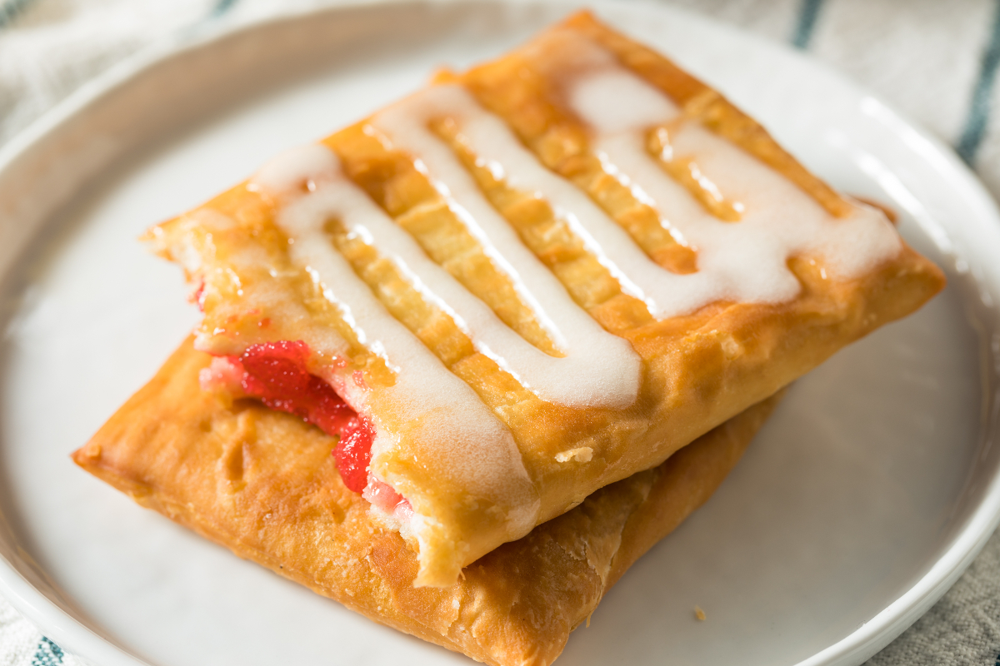

Hey, It Still Counts...
...The (Storebought) Toaster Strudel

Okay sure, maybe it's not making an actual MEAL, but sometimes you're just feeling a bit lazy and you need something quick and easy. You're not a kid anymore, so now you don't have a parent telling you "No we've got poptarts at home" when you ask "Mom can we get some toaster strudels?". Now, you can buy whatever you want!
Let's get toastin':
INGREDIENTS
- Toaster Strudel
- Strudel Icing
PREPERATION
- Pillsbury was nice enough to include an icing packet for every single strudel in the pack, so get out 2 strudels and 2 icing packets
- You're going to be toasting these twice, so make sure your toaster settings aren't set too high (I may or may not have burned my first ones and set off the fire alarm).
- Toast the strudels.
- Toast them once more.
- Place them on a plate (careful, they're Molten hot at this point).
- Spread the icing evenly across each strudel.
- Enjoy!
Back To The Recipes!